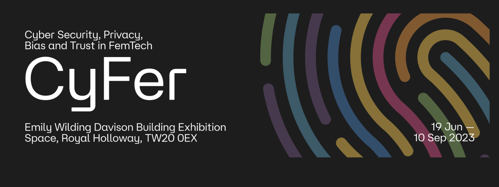
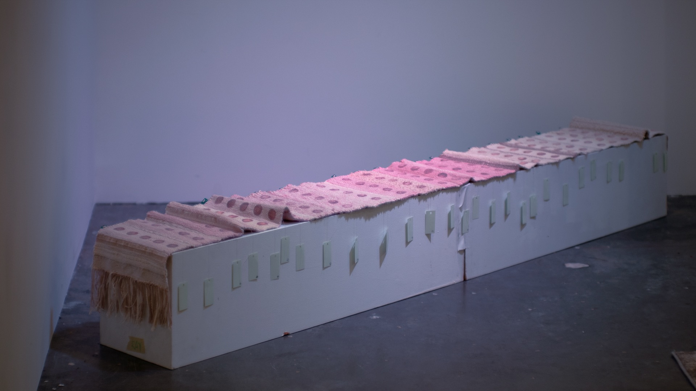
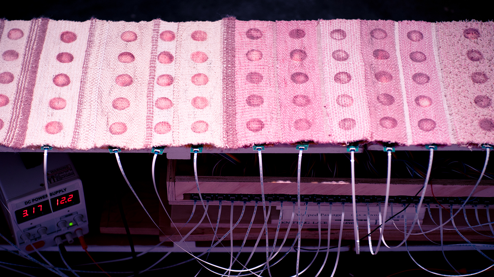

Moon Tapestry

Not Pocket Size
No Push Notifications
Curiosity and Human Intelligence Required
Moon Tapestry is a 28-day offline calendar designed for tracking and visualizing Basal Body Temperature (BBT) using thermochromic textile technology. Each day’s BBT input activates heating elements within the tapestry, causing moon phase patterns to emerge, creating a temperature curve that reveals bodily events like ovulation and menstruation for those familiar with symptothermal birth control. Holding only 28 days of data, it contrasts sharply with typical FemTech devices that collect and centralize biometric data on cloud servers.
Rejecting digital dependence, Moon Tapestry is a low-tech, open-source alternative that keeps intimate data private. It invites users to reclaim their data’s meaning without for-profit algorithms, offering a speculative vision of FemTech rooted in craft, domesticity, and women’s tactile knowledge. Displayed openly as an ornament, the tapestry blends privacy with visibility, creating a physical, aesthetic connection to one’s cyclical changes. Its deliberate, craft-based design encourages curiosity, care, and a hands-on approach to understanding the evolving body, challenging sleek, data-driven FemTech norms with an emphasis on embodied, personal insight.
{kind=link}
{kind=link}

{kind=link}
